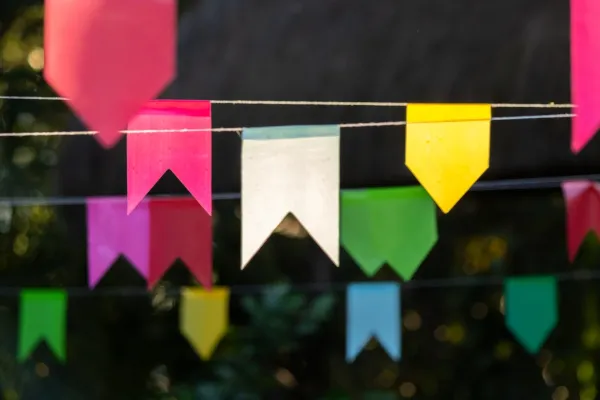
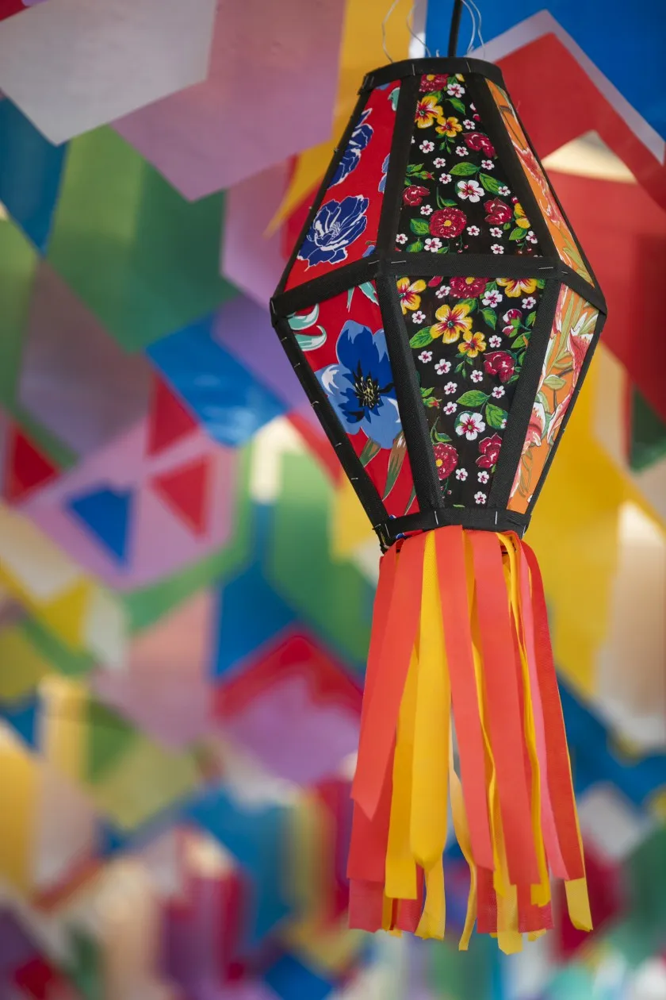
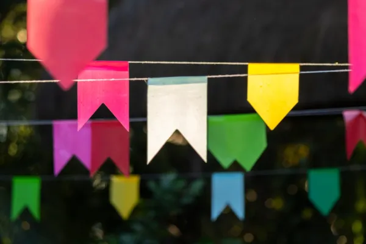
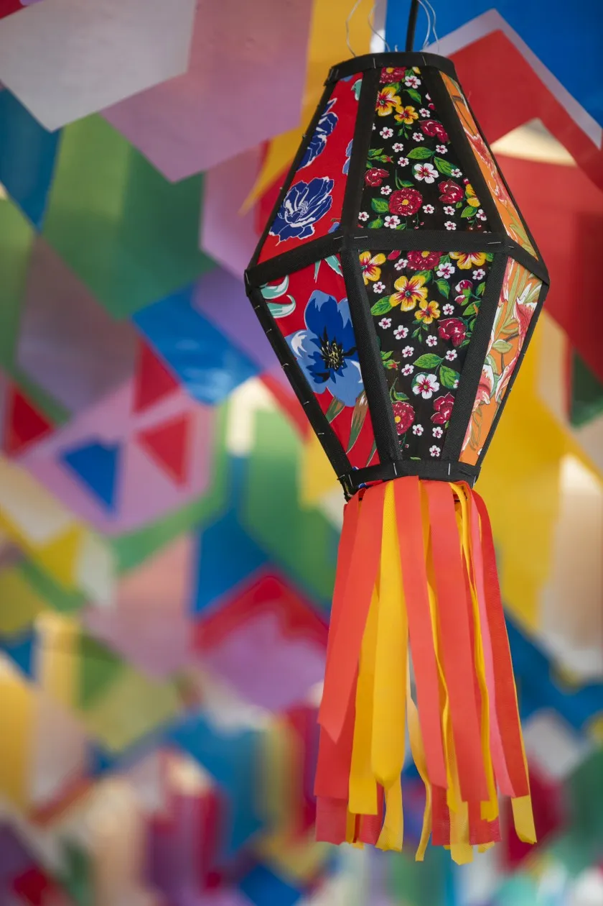
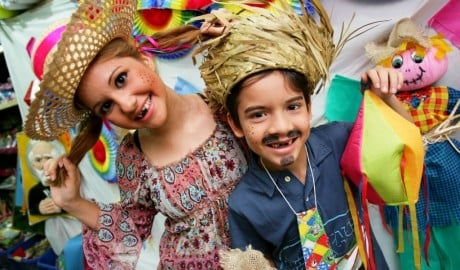

Decorações
Principal
Origem
Comidas Típicas
Brincadeiras
Decorações e Vestimentas
Quadrilha
- Fogueira
- Bandeirolas
- Balões
 Fogueira

Bandeirolas

Balão Junino
Fogueira

Bandeirolas

Balão Junino
Vestimentas
Mulheres:
- Vestidos rodados, multicoloridos e cheios de babados
- Tranças nos cabelos com laços de fita
- Botas
- Maquiagem caipira - sardas falsas
Homens:
- Camisa xadrez
- Calça com remendos coloridos
- Chapéu de palha
- Botinas
- Bigodes e barbas falsas
- Dentes pintado de preto

Desenvolvido por Anna ©